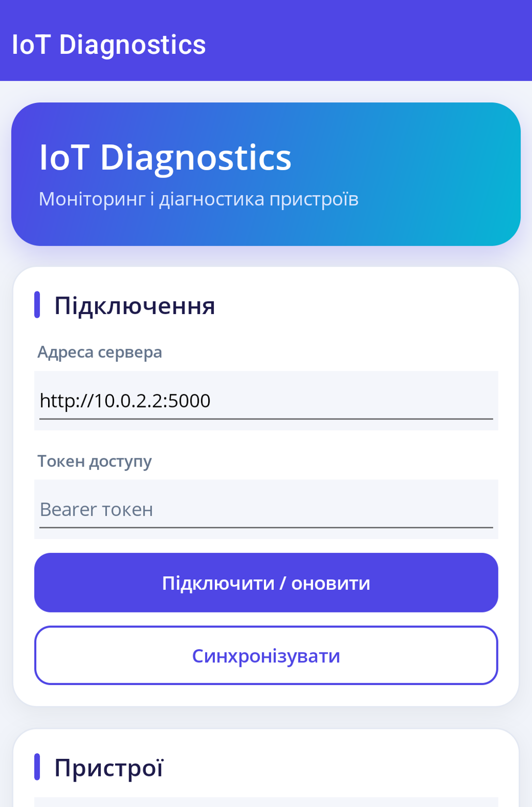
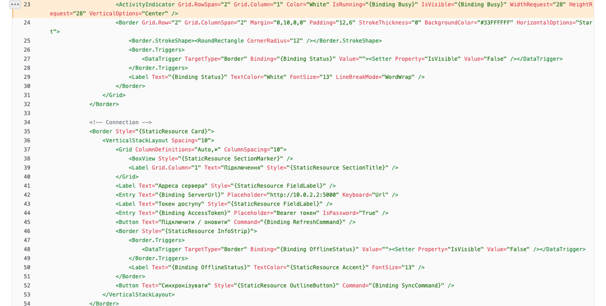
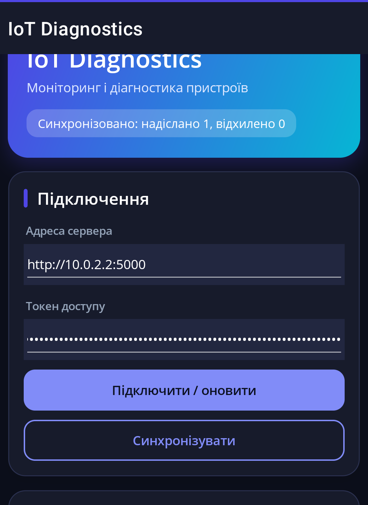
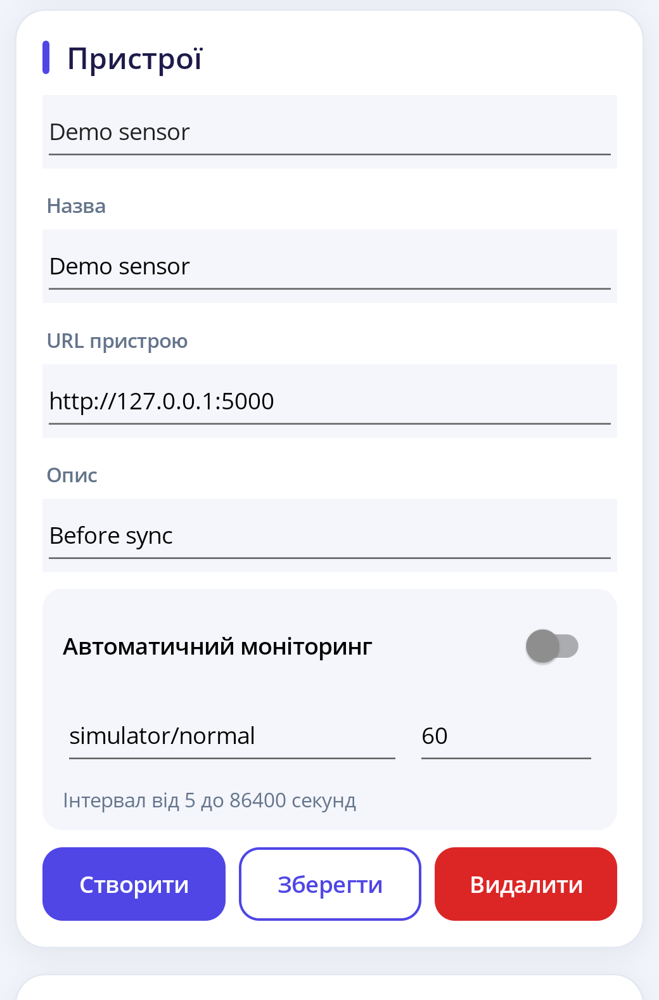
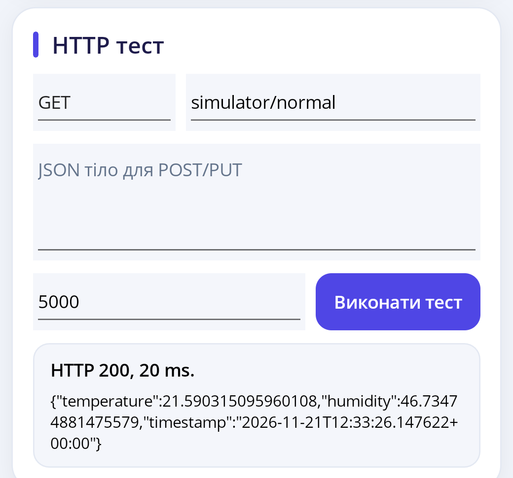
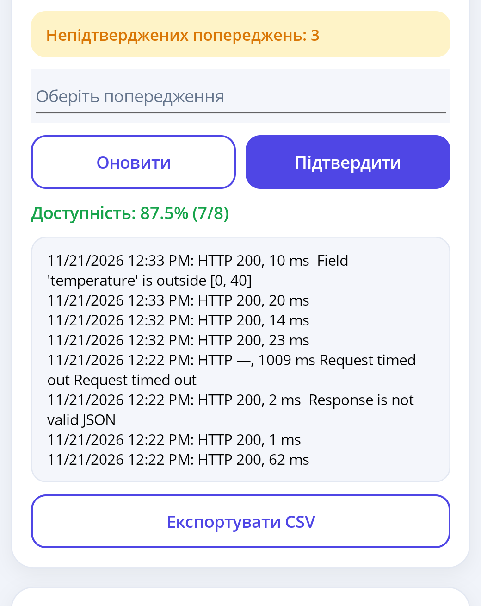
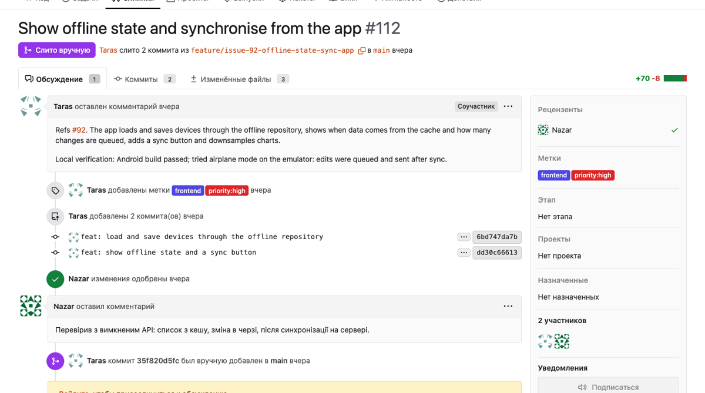
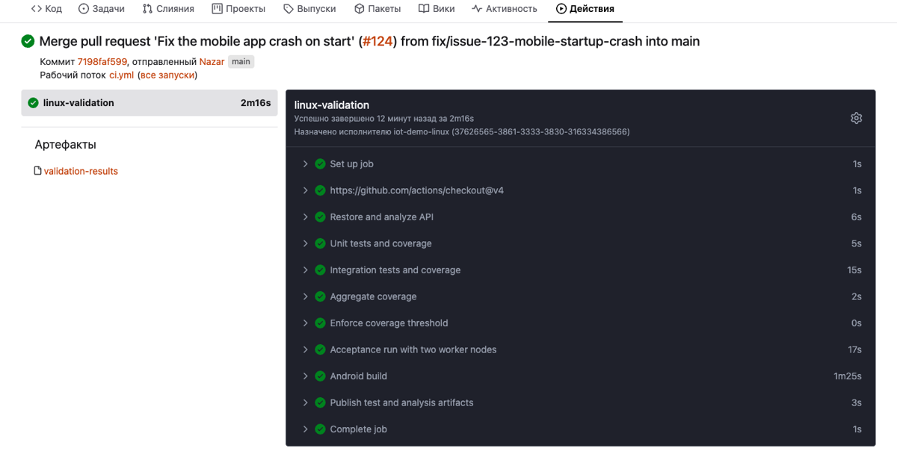

Підготовка перед захистом
На своєму Mac відкрий Terminal і виконай одну команду.
cd ~/Desktop/unik/MPP && ./demo-iot.shСкрипт перевірить спільний API, збере й відкриє IoT Diagnostics у mpp_phone та підготує вкладки VS Code і Forgejo. Перша збірка може зайняти кілька хвилин.
Працюй у порядку нижче. У терміналі Enter переходить до наступного кроку, o + Enter відкриває його на цій сторінці, b + Enter повертає назад. q + Enter завершує підказки. Залиш термінал відкритим до кінця показу.
Коли Android уже відкритий, запусти тільки підказки командою ./demo-iot.sh --guide.
Якщо скрипт завантажено у Downloads, виконай bash ~/Downloads/demo-iot.sh.
Завантажити demo-iot.sh · Команди з README для E3 · Перейти до дій в Android · Критерії PDF
Крок 01 · підключення до спільного API
- В Android відкрий IoT Diagnostics. У «Адреса сервера» встав
https://git.cvv-sandbox.eu.cc/iot-diagnostic/. - У «Токен доступу» встав виданий командою токен до поширення екрана. Натисни Підключити / оновити і дочекайся списку.
- Вибери Demo sensor. На спільному API для нього підготовлено правило
temperature0–40і два звичайні вимірювання. Перевір, що черга порожня. Повернися в Terminal і натисни Enter.
На скриншотах попередньої репетиції показано локальну адресу. Для цього показу використовуй спільний HTTPS-ендпоінт вище.
0:00–0:45
Вступ · що я зробив
Покажи. Почни з градієнтної шапки IoT Diagnostics. Вкажи на картку «Підключення», кнопку синхронізації та заголовок «Пристрої» нижче.
Доброго дня. Я Тарас Загорський, група ІПЗ-31. IoT Diagnostic Platform перевіряє HTTP API пристроїв, зберігає вимірювання і показує результати діагностики. Я відповідав за клієнт на .NET MAUI для Android і Windows. В останньому оновленні я переробив головний екран і стилі Android. Моя частина також охоплює роботу зі списком пристроїв, редактор тестового запиту, відображення відповіді, графік і офлайн-синхронізацію. Спочатку покажу, як це пов’язано в коді, потім повторю той самий шлях в Android-емуляторі.


0:45–2:45
Код · новий дизайн, XAML і ViewModel
Покажи у VS Code. Відкрий IoT.Mobile.csproj і виділи обидва цільові фреймворки. Перемкнися на MainPage.xaml.cs і вкажи на BindingContext. У MainPage.xaml знайди прив’язку SyncCommand і OfflineStatus.
Цільові платформи IoT.Mobile.csproj · 3–5
<PropertyGroup>
<TargetFrameworks>net10.0-android</TargetFrameworks>
<TargetFrameworks Condition="$([MSBuild]::IsOSPlatform('windows'))">$(TargetFrameworks);net10.0-windows10.0.19041.0</TargetFrameworks>BindingContext MainPage.xaml.cs · 2–5
public partial class MainPage : ContentPage
{
public MainPage(MainViewModel vm) { InitializeComponent(); BindingContext = vm; }
}Кнопки підключення, смуга офлайн і команда Sync MainPage.xaml · 43–52
<Label Text="Токен доступу" Style="{StaticResource FieldLabel}" />
<Entry Text="{Binding AccessToken}" Placeholder="Bearer токен" IsPassword="True" />
<Button Text="Підключити / оновити" Command="{Binding RefreshCommand}" />
<Border Style="{StaticResource InfoStrip}">
<Border.Triggers>
<DataTrigger TargetType="Border" Binding="{Binding OfflineStatus}" Value=""><Setter Property="IsVisible" Value="False" /></DataTrigger>
</Border.Triggers>
<Label Text="{Binding OfflineStatus}" TextColor="{StaticResource Accent}" FontSize="13" />
</Border>
<Button Text="Синхронізувати" Style="{StaticResource OutlineButton}" Command="{Binding SyncCommand}" />У файлі проєкту Android увімкнено як ціль збірки, а Windows додається при збірці на Windows. На екрані XAML описує поля й кнопки. Через BindingContext він отримує MainViewModel. Кнопка синхронізації викликає команду, а текст стану оновлюється з властивості OfflineStatus.
Покажи редизайн. У MainPage.xaml відкрий градієнт (13–23), потім смугу статусу з DataTrigger (24–30). У Styles.xaml покажи стиль Card, а в Colors.xaml — кольори теми. Натисни «Підключити / оновити» в Android і покажи, де з’явився статус.
- На 23 покажи
Busy. - На 27 знайди
DataTriggerдля порожнього статусу. - На 35 вкажи на
Card. - На 52 покажи
SyncCommand.


Індикатор Busy та видимість статусу MainPage.xaml · 23–30
<ActivityIndicator Grid.RowSpan="2" Grid.Column="1" Color="White" IsRunning="{Binding Busy}" IsVisible="{Binding Busy}" WidthRequest="28" HeightRequest="28" VerticalOptions="Center" />
<Border Grid.Row="2" Grid.ColumnSpan="2" Margin="0,10,0,0" Padding="12,6" StrokeThickness="0" BackgroundColor="#33FFFFFF" HorizontalOptions="Start">
<Border.StrokeShape><RoundRectangle CornerRadius="12" /></Border.StrokeShape>
<Border.Triggers>
<DataTrigger TargetType="Border" Binding="{Binding Status}" Value=""><Setter Property="IsVisible" Value="False" /></DataTrigger>
</Border.Triggers>
<Label Text="{Binding Status}" TextColor="White" FontSize="13" LineBreakMode="WordWrap" />
</Border>Спільний стиль картки Styles.xaml · 435–444
<Style TargetType="Border" x:Key="Card">
<Setter Property="BackgroundColor" Value="{AppThemeBinding Light={StaticResource SurfaceLight}, Dark={StaticResource SurfaceDark}}" />
<Setter Property="Stroke" Value="{AppThemeBinding Light={StaticResource OutlineLight}, Dark={StaticResource OutlineDark}}" />
<Setter Property="StrokeThickness" Value="1" />
<Setter Property="StrokeShape" Value="RoundRectangle 18" />
<Setter Property="Padding" Value="16" />
<Setter Property="Shadow">
<Shadow Brush="{StaticResource BlackBrush}" Opacity="0.06" Radius="14" Offset="0,4" />
</Setter>
</Style>Додатково. Якщо попросять показати темну тему, відкрий «Налаштування Android → Екран → Темна тема» та повернись до застосунку. Зверни увагу на фон і межі карток.
У PR №122 я зібрав екран із шести карток, щоб оператор швидко знаходив потрібну дію. Заголовок показує поточний стан і завантаження. DataTrigger прибирає порожні блоки, а AppThemeBinding вибирає кольори світлої або темної теми. Команди залишилися в тій самій ViewModel. Кнопка видалення має окремий стиль, щоб її легше відрізнити від збереження.


Кольори індиго й ціану · DangerButton · Diff нового дизайну
Потім. Відкрий MainViewModel.cs на методі ApplyAccessToken і IoTApiClient.cs на методах отримання й редагування пристроїв. Для пояснення повторних спроб відкрий RetryPolicy.cs на IsIdempotent і canRetry.
Збереження і додавання Bearer-токена MainViewModel.cs · 77–86
private async Task ApplyAccessToken()
{
// The token is kept in platform secure storage, never in plain preferences.
if (string.IsNullOrWhiteSpace(AccessToken))
AccessToken = await SecureStorage.Default.GetAsync("access-token") ?? "";
else
await SecureStorage.Default.SetAsync("access-token", AccessToken.Trim());
client.DefaultRequestHeaders.Authorization = string.IsNullOrWhiteSpace(AccessToken)
? null
: new System.Net.Http.Headers.AuthenticationHeaderValue("Bearer", AccessToken.Trim());Типізовані виклики для пристроїв IoTApiClient.cs · 32–45
public Task<List<Device>> GetDevicesAsync(CancellationToken ct = default) =>
GetAsync<List<Device>>("api/devices", ct);
public Task<Device> GetDeviceAsync(int id, CancellationToken ct = default) =>
GetAsync<Device>(Path(id), ct);
public Task<Device> CreateDeviceAsync(Device device, CancellationToken ct = default) =>
SendAsync<Device>(HttpMethod.Post, "api/devices", device, ct);
public Task<Device> UpdateDeviceAsync(int id, Device device, CancellationToken ct = default) =>
SendAsync<Device>(HttpMethod.Put, Path(id), device, ct);
public Task DeleteDeviceAsync(int id, CancellationToken ct = default) =>
SendAsync(HttpMethod.Delete, Path(id), null, ct);RetryPolicy.cs · рядки 44–76 · Мій PR №85
Клієнт тримає токен у SecureStorage і передає його як Bearer. Типізований IoTApiClient використовується, зокрема, для завантаження й редагування пристроїв через репозиторій. RetryPolicy повторює тимчасові збої лише для дозволених ідемпотентних методів. POST створення не повторюється автоматично на цьому рівні, бо це може створити другий запис.
Живий показ · Android і код поруч
Чистий запуск перевірено на 7198faf. Основні кадри дій знято під час попередньої репетиції на bc4aa27 з локальною правкою запуску. У #124 змінився порядок створення сторінки, сам екран та команди збігаються.
2:45–4:00
Пристрої · підключення, створення, редагування
- У картці Підключення натисни Підключити / оновити. Дочекайся «Завантажено пристроїв». Натисни Оберіть пристрій → Demo sensor.
- Для показу створення введи в поле Назва окрему назву
Demo CRUD, URLhttps://git.cvv-sandbox.eu.cc/iot-diagnostic/і описПерша версія. Прокрути нижче, натисни Створити і вибери новий запис у списку. - Зміни опис на
Оновлено в Android→ натисни Зберегти → обери Demo CRUD повторно. Покажи нове значення. - Якщо потрібно показати видалення, натисни Видалити саме для Demo CRUD. Повернися до Demo sensor із підготовленим правилом та історією.
Емулятор звертається до спільного API через HTTPS. Адреса пристрою, яку вводжу в картці, потрібна серверу для запиту до симулятора. Створення й редагування йдуть через один метод репозиторію. За ідентифікатором він визначає, чи створити пристрій, чи оновити існуючий.


У коді. Покажи, як Update() додає ID вибраного запису, а SaveAsync() обирає створення чи оновлення.
Дії зі списком і вибраним пристроєм MainViewModel.cs · 142–145
private int Id() => SelectedDevice?.Id ?? throw new InvalidOperationException("Оберіть пристрій.");
private async Task Create() { var saved = await (await Repository()).SaveAsync(Input()); await Refresh(); ReportSaved(saved); }
private async Task Update() { var device = Input(); device.Id = Id(); var saved = await (await Repository()).SaveAsync(device); await Refresh(); ReportSaved(saved); }
private async Task Delete() { var saved = await (await Repository()).DeleteAsync(Id()); SelectedDevice = null; await Refresh(); ReportSaved(saved); }DeviceRepository.cs · рядки 101–112 · Мій PR про створення, редагування й видалення
4:00–5:10
HTTP-тест · поля, запит і відповідь
- В Android вибери Demo sensor. Прокрути до блока HTTP тест і вибери GET. Праворуч від GET у полі шляху введи
simulator/normal. - Тіло залиш порожнім. У полі таймауту постав
5000. Сховай клавіатуру кнопкою Назад і натисни Виконати тест. - Під кнопкою покажи HTTP 200, фактичну тривалість у мілісекундах і поле
temperatureу JSON.
Зараз оператор вибирає метод, шлях і таймаут. Клієнт надсилає параметри до ASP.NET Core. Сам бекенд виконує запит до пристрою і повертає вимірювання. На екрані видно HTTP-код пристрою, час виконання й тіло відповіді.


У коді. У MainPage.xaml покажи прив’язки полів і кнопку SendCommand. У Send() знайди межі таймауту, PostAsJsonAsync, ResponseSummary і ResponseBody. Це окремий шлях ручного тесту у ViewModel. Для зв’язку із сервером відкрий Program.cs, маршрут /requests.
Поля HTTP-тесту · XAML 98–114 · Метод Send · рядок 146 · Маршрут API · рядок 101 · Мій редактор HTTP-тесту · Мій показ відповіді
5:10–6:35
Аномалія, історія, графік і CSV
- Під HTTP-формою знайди Правила діагностики. Якщо правило ще не збережене, введи
temperature, мінімум0, максимум40→ Додати. Досить одного правила на це поле. - У шляху заміни
simulator/normalнаsimulator/out-of-rangeі натисни Виконати тест. Вкажи на HTTP 200 і"temperature":150.
HTTP 200 означає успішну відповідь пристрою. Значення всередині JSON перевіряється окремо. Температура 150 виходить за інтервал від 0 до 40, тому її бачимо як попередження й пік на графіку.

- Прокрути до Попередження та історія. Покажи запис про вихід за межі. Вибери нове попередження → Підтвердити. Покажи, як змінюється кількість непідтверджених.
- У нижній картці Графік телеметрії залиш
temperature→ Оновити праворуч від поля. Покажи пік і максимум150.00. За потреби натисни Експортувати CSV, покажи системне меню, закрий його кнопкою Назад.
У списку видно нове попередження. Після підтвердження воно зникає зі списку непідтверджених, а вимірювання лишається в історії. Нижче перевіряю, що максимум графіка збігається з відповіддю 150.



У коді. У LoadTelemetry() покажи, як клієнт отримує числові точки й передає їх у ChartData.Downsample. Потім покажи, як Series оновлює графік. Для CSV відкрий Export().
Оновлення графіка MainViewModel.cs · 209–217
var field = Uri.EscapeDataString(TelemetryPath);
var data = await client.GetFromJsonAsync<TelemetryData>(Url($"api/devices/{Id()}/telemetry?field={field}"))
?? throw new JsonException("Порожня відповідь аналітики.");
var points = ChartData.Downsample(data.Points.Select(point => new ChartPoint(point.Timestamp, point.Value)).ToList(), ChartPoints);
Series = [new LineSeries<double> { Values = points.Select(point => point.Value).ToArray(), Name = data.Field }];
OnPropertyChanged(nameof(Series));
TelemetrySummary = data.Points.Count == 0
? $"Немає числових даних. Пропущено: {data.Skipped}/{data.Examined}"
: $"Мін: {data.Minimum:F2}; макс: {data.Maximum:F2}; середнє: {data.Average:F2}. Пропущено: {data.Skipped}/{data.Examined}";Для довгої історії я скорочую ряд до 120 точок. Алгоритм LTTB вибирає характерні точки за площею трикутників. Підсумкові мінімум і максимум приходять із відповіді сервера, тому ці числа не перераховуються тільки за намальованими точками.
Алгоритм LTTB · Експорт у файл і системне меню · Мій PR №96 · Скриншот графіка
6:35–7:50
Офлайн · відключення, редагування і кеш
- Повернися на верх екрана, залиш Demo sensor вибраним. Переконайся, що перед початком черга порожня. Мишею двічі потягни вниз від верхнього краю екрана Android.
- Натисни Режим польоту / Airplane mode. Якщо Wi-Fi лишився активним, відкрий Інтернет / Internet і вимкни Wi-Fi. Закрий панель та дочекайся розриву з’єднання.
- У полі Опис введи
android-offline-demo. Сховай клавіатуру. Нижче під параметрами моніторингу натисни Зберегти, середню кнопку в ряду. - Прокрути догори. Покажи «Немає зв’язку» в шапці, а під кнопкою підключення — «Офлайн: дані з кешу» й Змін у черзі: 1. Пристрій можна повторно вибрати зі списку.
Я зберіг редагування після втрати мережі. У списку є останні дані з SQLite, а клієнт наклав на них локальну правку. Лічильник показує одну операцію, яку ще потрібно надіслати на сервер.

У коді. У LoadAsync() покажи обидві гілки: онлайн оновлюється кеш, офлайн завантажується останній збережений список. У SaveAsync() на 109–112 покажи QueueSaveAsync(). В OfflineStore.cs відкрий схему таблиці черги.
Перемикання на кеш DeviceRepository.cs · 74–87
public async Task<DeviceList> LoadAsync(CancellationToken ct = default)
{
var pending = await store.GetPendingAsync(ct);
try
{
var devices = await api.GetDevicesAsync(ct);
await store.ReplaceDevicesAsync(devices, ct);
return new DeviceList(PendingOverlay.Apply(devices, pending), false, null, pending.Count);
}
catch (Exception e) when (IoTApiClient.IsOffline(e))
{
var cached = await store.GetDevicesAsync(ct);
return new DeviceList(PendingOverlay.Apply(cached, pending), true, await store.GetLastSyncAsync(ct), pending.Count);
}Запис зміни в чергу DeviceRepository.cs · 109–113
catch (Exception e) when (IoTApiClient.IsOffline(e))
{
await QueueSaveAsync(device, ct);
return false;
}Схема SQLite і черга · Мій PR №89 · Як стан кешу потрапляє на екран
7:50–9:15
Синхронізація · від кнопки до запису на сервері
- Розгорни швидкі налаштування Android ще раз. Вимкни Режим польоту, увімкни Wi-Fi та дочекайся підключення. Повернися в застосунок.
- Натисни контурну кнопку Синхронізувати у картці «Підключення». Дочекайся повідомлення у верхній шапці Синхронізовано: надіслано 1, відхилено 0.
- Знову натисни Оберіть пристрій → Demo sensor. Покажи збережений опис. Якщо репетируєш удруге, введи інше значення, щоб воно відрізнялося від попереднього.
Повернув підключення і вручну натиснув «Синхронізувати». Спочатку SyncEngine відправляє операції з черги. Успішну операцію знімає з черги, а потім завантажує свіжий список і оновлює кеш. Повторний вибір пристрою показує, що сервер повертає новий опис.

У коді. У MainViewModel.Sync() покажи виклик рушія та формування повідомлення. У SyncEngine.PushAsync() знайди CompleteAsync(), FailAsync() і RecordAttemptAsync().
Команда Sync і повідомлення в Android MainViewModel.cs · 121–130
private async Task Sync()
{
await ApplyAccessToken();
await Repository();
var report = await new SyncEngine(api!, offlineStore!).SyncAsync();
await Refresh();
Status = report.Completed
? $"Синхронізовано: надіслано {report.Sent}, відхилено {report.Rejected}"
: $"Синхронізацію перервано: {report.Interruption}";
}Успіх, відхилення й переривання SyncEngine.cs · 65–77
await store.CompleteAsync(operation.Sequence, ct);
sent++;
}
catch (ApiException e) when (e.IsPermanent)
{
await store.FailAsync(operation.Sequence, e.Message, ct);
rejected++;
}
catch (Exception e) when (e is ApiException || IoTApiClient.IsOffline(e))
{
await store.RecordAttemptAsync(operation.Sequence, e.Message, ct);
return (sent, rejected, e.Message);
}Якщо сервер остаточно відхиляє конкретну правку, вона позначається як невдала і решта черги може піти далі. Якщо зникає мережа, SyncEngine записує спробу, переривається і залишає невідправлене для наступної синхронізації.
Послідовність push → завантаження стану · Тести відхилення й втрати зв’язку
9:15–11:20 · B1 / B3 / D1
Forgejo · огляд мого внеску
Покажи у браузері. Відкрий три PR у цьому порядку. Коли викладач просить повний ланцюг, зупинися на №112.
- №85 · HTTP-клієнт. Відкрий Files changed і покажи
RetryPolicyта тести. Вкажи, що POST не повторюється автоматично. Рев’ю цього рішення - №112 · офлайн-сценарій. Відкрий issue №92, покажи виконавця і чотири умови приймання. У PR назви гілку
feature/issue-92-offline-state-sync-app. У Commits покажиdd30c666та6bd747daіRefs #92. Далі відкрий diff, рев’ю з перевіркою без API та merge у main. - №122 / №124 · інтерфейс і запуск. У diff №122 покажи картки, спільну тему і
DataTrigger. Потім відкрий issue №123 → diff №124. ПокажиInitializeComponent()та відкладене створенняMainPageуCreateWindow().
Мій внесок складається з кількох шарів. Спочатку я зробив типізований HTTP-клієнт. Потім додав SQLite-кеш і чергу, під’єднав їх до екрана й показав синхронізацію наживо. В останніх PR переробив вигляд і виправив збій запуску після редизайну. Для B1 показую №112: тут є задача, гілка, два коміти, ручна перевірка рев’юером і merge.


Потім B3. У чужому PR №102 відкрий моє зауваження → виправлення автора → мою повторну перевірку. На вимогу покажи ще №33 і №28, а №16 залиш як запасний.
У чужому PR №102 я відтворив 500 на некоректному JSON під .NET 10. Автор виправив обробку, і я тим самим запитом отримав 400. Інші два мої рев’ю стосуються статистики без вимірювань і таймауту.
Повний огляд PR з кодом і доказами · Усі 4 мої рев’ю · Мої задачі й дати
11:20–12:50
Автотести, Actions і підсумок
- Відкрий OfflineSyncTests.cs, рядки 68–81. Покажи, як тест обриває з’єднання після першої операції і перевіряє, що наступна лишилася в черзі. Якщо запитають про внесок в API-тести, відкрий мій PR №37.
- Відкрий Forgejo · IoT validation №61 → linux-validation → Unit tests and coverage та Integration tests and coverage. Далі відкрий Enforce coverage threshold, Acceptance run with two worker nodes та Android build.
- Покажи локальний звіт Coverlet / ReportGenerator і 11/11 приймальних перевірок. Потім відкрий SonarQube №62 → analysis → Analyze backend and import coverage. Для оцінки C4 потрібна також актуальна кількість critical/major в Issues SonarQube.


Тест перерваної синхронізації OfflineSyncTests.cs · 68–81
public async Task LosingTheConnectionStopsAndKeepsTheRest()
{
await store.EnqueueAsync(OperationKind.UpdateDevice, 1, payload: Device(1, "A"));
await store.EnqueueAsync(OperationKind.UpdateDevice, 2, payload: Device(2, "B"));
server.Reply(HttpStatusCode.OK, "{\"id\":1,\"name\":\"A\",\"baseUrl\":\"http://a\"}")
.Fail(new HttpRequestException("network unreachable"));
var report = await new SyncEngine(api, store).SyncAsync();
Assert.False(report.Completed);
Assert.Equal("network unreachable", report.Interruption);
var left = Assert.Single(await store.GetPendingAsync());
Assert.Equal((2, 1), (left.DeviceId, left.Attempts));
}Цей тест перевіряє, що після обриву мережі черга не втрачає невідправлену операцію. На показаному коміті локально пройшли 245 модульних і 110 інтеграційних тестів. Coverlet виміряв 96,2% рядків у тестованих збірках без MAUI та згенерованих міграцій. У Forgejo видно окремі кроки для тестів, порога покриття, приймального прогону й Android-збірки.
Підсумую. На Android я показав шлях від запиту й діагностики до збереження зміни без мережі та її доставки після відновлення зв’язку. У коді й Forgejo видно, якими методами та комітами це реалізовано. Дякую, готовий до запитань.
Конфігурація CI · Результати й крайні випадки · Запитання і мікрозміни
«Як захищати проєкт з МПП?» · критерії A–E
Порядок і ваги взято з методички, сторінки 1–5. Тут зібрано матеріали для мого показу. Натисни код критерію, щоб перейти до потрібного кроку, файлу, PR або результату.
| Код / вага | Що перевіряє викладач | Що я відкриваю |
|---|---|---|
| A1 · 3 | Два проміжні чекпоінти та комплект матеріалів | Дати й підтвердження здачі |
| A2 · 5 | Щотижневі коміти, issue, README, журнал рішень, робочі гілки | Історія Git і п’ять рішень |
| A3 · 4 | Зауваження з чекпоінта й закриття до наступного етапу | Як прив’язати зауваження до issue |
| B1 · 12 | Моя зона, повний ланцюг issue → merge | Дії в Forgejo · PR за частинами роботи |
| B2 · 8 | Вчасно закриті задачі або завчасно задокументована зміна строку | Мої задачі, дати та зведення |
| B3 · 5 | Три результативні рев’ю чужих PR | Зауваження → правка → повторна перевірка |
| C0 · 3 | Жива демонстрація на кількох ОС | Android і Windows |
| C1 · 12 | Пройдені кейси з погодженого списку | Таблиця прогону й Android-докази |
| C2 · 5 | П’ять категорій крайніх випадків | Випадок, дія, результат і доказ |
| C3 · 6 | Автотести, звіт покриття і CI | Coverlet і кроки Actions |
| C4 · 4 | Кількість critical/major на 1 000 рядків | SonarQube та розрахунок |
| C5 · 3 | П’ять доказів цілісності й безпеки даних | Таблиця з файлами та рядками |
| D1 · 10 | Складність і повнота мого внеску | Репліка про мою зону та приклад з коду |
| E1 · 12 | Відповіді на запитання | Підготовлені відповіді за кодом |
| E2 · 5 | Дві мікрозміни наживо | Рядки до зміни і як перевірити |
| E3 · 3 | Запуск з нуля за README | Команди в порядку запуску |
A · процес і дисципліна
A1 · два проміжні дедлайни
Що відкрити. Для кожного чекпоінта підготуй оголошення з дедлайном, матеріали, які здали, і повідомлення з датою здачі. Зістав їх на екрані. Після цього покажи посилання на відповідний стан коду.
У доступному Forgejo немає підтверджень фактичної здачі двох чекпоінтів. Дата merge підтверджує стан коду на цю дату. У методичці повний рівень дають два вчасні чекпоінти з матеріалами.
A2 · п’ять доказів ведення репозиторію
- Ритм роботи. Методичка питає щонайменше один змістовний коміт за тиждень. Відкрий історію main і звір авторів та дати за тижнями курсу. Приклади змістовних комітів: 17.10 · інтеграційні тести, 21.10 · робота з пристроями, 08–09.11 · клієнт, 11–13.11 · кеш, 19–20.11 · синхронізація, 21.11 · екран. Повна перевірка щотижневої вимоги потребує меж навчальних тижнів.
- Прив’язка комітів. У №112 → Commits покажи
Refs #92у двох комітах. - README. Відкрий інструкцію запуску і покажи команди для API й Android.
- Рішення. Для перевірки журналу відкрий командний логбук, якщо він є. Нижче є п’ять відтворених з PR записів «проблема → рішення».
- Гілкова модель. У №112 покажи назву гілки й напрямок merge в
main.
П’ять рішень з моїх PR
- Мережі немає → SQLite-кеш і черга. №89
- Правка може отримати 409 → відхилення зберігається, решта черги виконується. Повторна перевірка №89
- Тимчасовий збій API → повтори ідемпотентних методів із затримкою. №85
- Забагато точок на графіку → LTTB зберігає характерну форму. №96
- Картки звертаються до ще не завантажених ресурсів →
MainPageрезолвиться вCreateWindow(). №124
A3 · зауваження з чекпоінтів
Що показати. Відкрий повідомлення викладача → відповідний issue → коміт виправлення → дату наступного чекпоінта. Порахуй, скільки зауважень закрито вчасно від усіх отриманих.
Як приклад ланцюга усунення дефекту є №123 про падіння Android → №124. Це зафіксований баг проєкту. Для A3 потрібне джерело, яке підтверджує, що зауваження надійшло саме на чекпоінті.
B і D · мої задачі, PR та рев’ю
B1 · мої 16 змерджених PR
На захисті. Покажи №85, повний ланцюг №112 і №122 разом із №124. Інші PR відкривай за запитом викладача.
| Зона | Issue і PR | Що відкрити в коді |
|---|---|---|
| Архітектура, підключення та стан | #29 → PR #38 · diff #35 → PR #39 · diff #40 → PR #46 · diff | Покажи BindingContext, реєстрацію сторінки і стан підключення. Файл для показу |
| Список і керування пристроями | #43 → PR #48 · diff #42 → PR #49 · diff | Покажи Picker, створення, оновлення і очищення вибору після видалення. Файл для показу |
| HTTP-тест і відповідь | #45 → PR #52 · diff #44 → PR #51 · diff | Покажи валідацію таймауту, маршрут та відображення коду, часу і JSON. Файл для показу |
| Історія та телеметрія | #53 → PR #56 · diff #55 → PR #60 · diff #91 → PR #96 · diff | Покажи історію, CSV, LiveCharts і LTTB. У №96 є тести та перевірка збереження піку. Файл для показу |
| Типізований клієнт | #77 → PR #85 · diff | Покажи RetryPolicy та тести. Автоматичний повтор обмежено ідемпотентними методами. Файл для показу |
| Кеш, черга і UI синхронізації | #86 → PR #89 · diff #92 → PR #112 · diff | Покажи як правка стає в чергу, як 409 обробляється і як кнопка запускає SyncEngine. Файл для показу |
| Тести API та симулятора | #34 → PR #37 · diff | Покажи доданий кейс із некоректним JSON і перевірку в рев’ю. Файл для показу |
| Редизайн і виправлення запуску | #121 → PR #122 · diff #123 → PR #124 · diff | Покажи нові картки, а потім виправлення порядку завантаження XAML-ресурсів. Файл для показу |
Ланцюги з комітами, рев’ю та merge
- Issue #92 →
feature/issue-92-offline-state-sync-app→ PR #112 → 6bd747da · dd30c666 → merge
Підтвердження після перевірки - Issue #86 →
feature/issue-86-offline-cache-change-queue→ PR #89 → 851120b3 · 735e557e → merge
Зауваження про 409 → Підтвердження після перевірки - Issue #121 →
feature/issue-121-mobile-ui-redesign→ PR #122 → af85b5db → merge
Ручний review у вкладці PR відсутній. Показати diff та успішний CI. - Issue #123 →
fix/issue-123-mobile-startup-crash→ PR #124 → ecbde9ee → merge
Ручний review у вкладці PR відсутній. Показати diff та успішний CI.
B2 · мої 16 задач і командне зведення
Покажи. Відкрий свої дати закриття й зістав їх із погодженими строками. Для перенесення покажи повідомлення до дедлайну, оновлений issue і нову дату.
У доступних задачах дедлайни порожні. Закриття підтверджене, а своєчасність і частку для B2 звіряй з графіком та повідомленнями команди.
| Issue | Завдання | Закрито (UTC) | Стан строку в Git |
|---|---|---|---|
| №123 | Mobile app crashes on start after the redesign | 2026-11-21 | Строк не вказано |
| №121 | Redesign the mobile main screen | 2026-11-21 | Строк не вказано |
| №92 | Show offline state and sync in the app | 2026-11-20 | Строк не вказано |
| №91 | Downsample telemetry for phone charts | 2026-11-15 | Строк не вказано |
| №86 | Keep the mobile app usable offline | 2026-11-13 | Строк не вказано |
| №77 | Extract a typed API client for the mobile app | 2026-11-09 | Строк не вказано |
| №55 | Implement telemetry charts | 2026-11-04 | Строк не вказано |
| №53 | Implement alert and event history | 2026-11-05 | Строк не вказано |
| №45 | Create HTTP request editor | 2026-10-23 | Строк не вказано |
| №44 | Show response status timing and JSON | 2026-10-24 | Строк не вказано |
| №43 | Create device list and registration screen | 2026-10-21 | Строк не вказано |
| №42 | Implement device editing and deletion | 2026-10-22 | Строк не вказано |
| №40 | Implement loading and error states | 2026-10-20 | Строк не вказано |
| №35 | Add application connection settings | 2026-10-17 | Строк не вказано |
| №34 | Add integration and acceptance tests | 2026-10-17 | Строк не вказано |
| №29 | Define MAUI architecture and navigation | 2026-10-17 | Строк не вказано |
Командне зведення для B2
Методичка просить загальну таблицю. У спільних задачах кожен призначений учасник підрахований окремо.
| Учасник | Закрито / призначено | Джерело |
|---|---|---|
| Тарас | 16 / 16 | Закриті задачі у Forgejo |
| Назар | 21 / 21 | Закриті задачі у Forgejo |
| Іван | 16 / 16 | Закриті задачі у Forgejo |
| Денис | 11 / 11 | Закриті задачі у Forgejo |
B3 · чотири результативні рев’ю чужих PR
За методичкою для повного рівня покажи щонайменше три. Почни з №102, №33 і №28.
- PR #102. Некоректний JSON повертав 500 у Development під .NET 10. Після виправлення повторив запит і підтвердив 400.
- PR #33. Новий пристрій без вимірювань повертав 404 у статистиці. Після зміни перевірив підсумок 0 із 0.
- PR #28. Запропонував обмежити тривалість запиту. Перевірив таймаут і запис збою у вимірюванні.
- PR #16. Оновлення відсутнього пристрою могло дати 500. Повторна перевірка дала 404.
D1 · що було складним у моїй зоні
Покажи. Зістав кеш і чергу зі синхронізацією. У SyncEngine.PushAsync() відкрий гілки успіху, остаточного відхилення та обриву мережі. Далі відкрий редизайн і виправлення запуску.
У моїй зоні найскладнішою була послідовність дій без мережі: показати кеш, записати редагування, надіслати його у правильному порядку та залишити невідправлене після обриву. Це перевірив тестом і показом на Android. Я також відокремив оформлення екрана від команд і виправив порядок завантаження ресурсів.
Для оцінки повноти зістав із зоною, погодженою на Зрізі 0. Код черги · Тест обриву
C · технічна якість проєкту
Ці критерії оцінюють продукт команди. Нижче — те, що я можу показати під час своєї частини.
C0 · демонстрація операційних систем
Android. У живому показі виконую HTTP-тест і офлайн-синхронізацію. Windows. Якщо готова актуальна збірка, відкрий MAUI-клієнт на Windows, виконай той самий GET simulator/normal і покажи JSON. У Windows вкажи той самий спільний API https://git.cvv-sandbox.eu.cc/iot-diagnostic/.
Одна ОС дає 0,5 рівня C0, дві або більше — 1,0. Архівний кадр Windows з попередньої локально виправленої збірки підійде як резерв ілюстрації. Для актуальної версії основний перевірений показ тут — Android. Інструкція Windows

C1 · приймальні тест-кейси
Локальний приймальний скрипт запускає API і два воркери на спільній SQLite. Нижче всі 11 перевірок цього прогону. Для оцінки за методичкою звір таблицю з погодженим у команді списком.
| Кейс | Як відтворити | Результат та доказ |
|---|---|---|
| Доступ | Запитай список пристроїв без токена. | HTTP 401 від API. |
| Валідація | Створи пристрій із порожньою назвою та ftp://x. | HTTP 400. |
| Правила | Заміни набір правил через PUT. | HTTP 200. |
| Роль Viewer | Спробуй запустити тест як Viewer. | HTTP 403. |
| Норма | Запусти normal. | API записує перевірку. Android |
| Аномалія | Запусти out-of-range. | API записує перевірку. У застосунку видно температуру 150. Android |
| Недоступність | Запусти error. | API записує перевірку. Симулятор повертає 503. |
| JSON | Запусти invalid-json. | API записує перевірку. Діагностика з правилом показує некоректний JSON. Історія |
| Таймаут | Запусти timeout з лімітом 1000 мс. | API записує перевірку. В історії є Request timed out. Історія |
| Два воркери | Дочекайся планової перевірки, перевір статус та аудит. | Планове вимірювання та аудит записано. Фактичні лічильники є в підсумку. |
| Логи | Перевір журнали API й двох воркерів. | Вибірка fail:, crit: і Unhandled exception порожня. |
Фактичний вивід · 11/11 · Код приймального скрипту · Додатковий ручний кейс · офлайн
C2 · п’ять крайніх випадків
| Випадок | Що зробити | Оброблено / доказ |
|---|---|---|
| Введення | Введи таймаут 99 мс та натисни «Виконати тест». | Так. Код перевіряє 100–60000 мс до HTTP-запиту. Рядок 146 |
| Некоректні дані | GET simulator/invalid-json з правилом для температури. | Так. Історія показує Response is not valid JSON. Скриншот |
| Виняток | GET simulator/timeout, 1000 мс. | Так для цього сценарію. Збій записується, застосунок реагує на наступні дії. Скриншот |
| Межі | Перевір 4, 5, 86400 і 86401 с інтервалу моніторингу. | Так. 5 і 86400 прийняті, 4 і 86401 відхилені. Інтеграційний тест |
| Журнали | Подивись журнали після приймального прогону. | Так для API та двох воркерів. Рядок PASS про логи |
Окреме обмеження клієнта: у попередньому Android-прогоні недійсний токен міг закрити застосунок при HTTP 401. Перед живим демо перевір свіжий токен. Виправлення №124 стосується завантаження XAML-ресурсів.
C3 · автотести, Coverlet, CI
Покажи. В IoT validation №61 відкрий linux-validation → unit → integration → Enforce coverage threshold. Покажи, де створюється validation-results. Далі відкрий локальний звіт інструмента.
Локально на 7198faf пройшло 245 unit + 110 integration. Покриття рядків — 96,2% для шести збірок. Android UI перевірено вручну. Збірка Android у CI йде окремим кроком.
Підсумок тестів · Звіт Coverlet / ReportGenerator · CI і поріг 80% · Мій PR з інтеграційними тестами
C4 · статичний аналіз і щільність зауважень
Покажи. У SonarQube №62 відкрий analysis і результат Quality Gate. Якщо є доступ до панелі, в Issues відфільтруй critical і major, далі в Measures візьми кількість проаналізованих рядків. Формула методички — (critical + major) × 1000 / рядки.
За шкалою PDF 0 → 1,0, до 2 → 0,8, до 5 → 0,6, до 10 → 0,4, понад 10 → 0. У логу аналізу відображено QUALITY GATE STATUS: PASSED. Точну щільність для цього запуску треба взяти з актуального SonarQube.

C5 · п’ять доказів цілісності даних
| Пункт PDF | Що показати та сказати | Доказ |
|---|---|---|
| Нормалізація | Пристрої, правила, вимірювання й події у різних таблицях. DeviceStatuses лишає окрему проєкцію для швидкого читання підсумку. | Модель і обґрунтування |
| PK/FK і обмеження | Покажи FK Measurement.DeviceId, унікальну назву пристрою і перевірку меж інтервалу. | IoTDbContext 22–37 |
| Індекси | (DeviceId, Timestamp) для історії та (MeasurementId, IsAcknowledged) для попереджень. | Рядки 24 і 40 |
| Параметризовані запити | У локальному SQLite значення передаються через SqliteParameter / параметри команди. У запиті захоплення lease EF Core передає ID як параметр. | Команда клієнта · EF Core |
| Транзакції | Покажи атомарний запис вимірювання і повідомлення outbox. У моєму клієнті покажи транзакцію під час додавання або злиття змін у черзі. | Сервер · Клієнт |
E3 · запуск з нуля за README
Покажи. Відкрий README і звір команди в терміналі. Критерій перевіряє, чи може інша людина повторити запуск за інструкцією в межах часу.
Для живого показу використовуй спільний API та підключення Android. За критерієм E3 покажи команду запуску клієнта і README.
Збірка для показу — 7198faf. Виправлення запуску вже в main. У App спочатку виконується InitializeComponent(), а MainPage створюється в CreateWindow(). Ресурси теми вже завантажені, коли сторінка читає StaticResource Primary.
Діагностика · issue №123 · Виправлення · PR №124 · Лог попередньої версії · Кадр чистої збірки
Як виправлено запуск · спочатку ресурси, потім сторінка App.xaml.cs · 4–8
private readonly IServiceProvider services;
// The page is resolved after InitializeComponent so its StaticResources can find the app palette.
public App(IServiceProvider services) { InitializeComponent(); this.services = services; }
protected override Window CreateWindow(IActivationState? activationState) => new(new NavigationPage(services.GetRequiredService<MainPage>()));Перевірити спільний API
curl -fsS https://git.cvv-sandbox.eu.cc/iot-diagnostic/Очікувана відповідь містить "status":"ok". README проєкту
Відкрити Android і підказки
cd ~/Desktop/unik/MPP
./demo-iot.shУ полі Адреса сервера введи https://git.cvv-sandbox.eu.cc/iot-diagnostic/. У поле Токен доступу встав виданий командою токен. Якщо клієнт уже відкритий, команда ./demo-iot.sh --guide відкриє тільки підказки.
Дані для показу на спільному сервері
Після підключення вибери Demo sensor. URL пристрою https://git.cvv-sandbox.eu.cc/iot-diagnostic/, правило temperature від 0 до 40 і два вимірювання GET simulator/normal уже збережені. Для показу створення та видалення використовуй окремий запис Demo CRUD з тим самим URL.
E1 / E2 · запитання та зміни наживо
Це підготовлені відповіді за кодом проєкту. Для E1 звір їх із банком курсу.
- Чому адреси сервера і Demo sensor збігаються?
- Android звертається до API за
https://git.cvv-sandbox.eu.cc/iot-diagnostic/. Для цього показу пристрій спрямовано на симулятор того самого сервера. Клієнт надсилає параметри тесту, а бекенд виконує запит доsimulator/normal. - Чим черга відрізняється від кешу?
- Кеш — остання отримана копія списку. Черга — локальні операції, які треба відправити. Репозиторій накладає операції на копію перед показом.
- Що відбувається з 409 і з обривом мережі?
- Остаточне відхилення позначається як невдала операція й не блокує решту. Збій зв’язку зупиняє синхронізацію, а невідправлені дані залишаються для наступної спроби.
- Чому є 200 і водночас попередження?
- HTTP-код описує транспортну відповідь. Правило діагностики перевіряє зміст JSON, наприклад температуру поза діапазоном.
- Чому для створення немає автоматичних повторів HTTP?
- Якщо POST виконався на сервері, але відповідь загубилася, автоматичний повтор може створити ще один запис. RetryPolicy обмежує автоматичні повтори ідемпотентними методами.
- Навіщо LTTB і чи змінює він максимум?
- Скорочує кількість точок для рендеру, залишаючи першу, останню та характерні точки. Підсумковий максимум приходить від API за повним набором.
E2 · дві мікрозміни наживо
- Зменшити ліміт графіка до 80 точок. У рядку 18 зміни
ChartPoints = 120на80. Після збірки онови графік для пристрою, у якого понад 80 числових вимірювань. Для короткої історії кількість точок збережеться. - Поставити початковий таймаут 2 секунди. У рядку 27 знайди
timeoutMs = "5000"та зміни на"2000". Перезбери клієнт, покажи число 2000 після запуску та виконайsimulator/timeout.